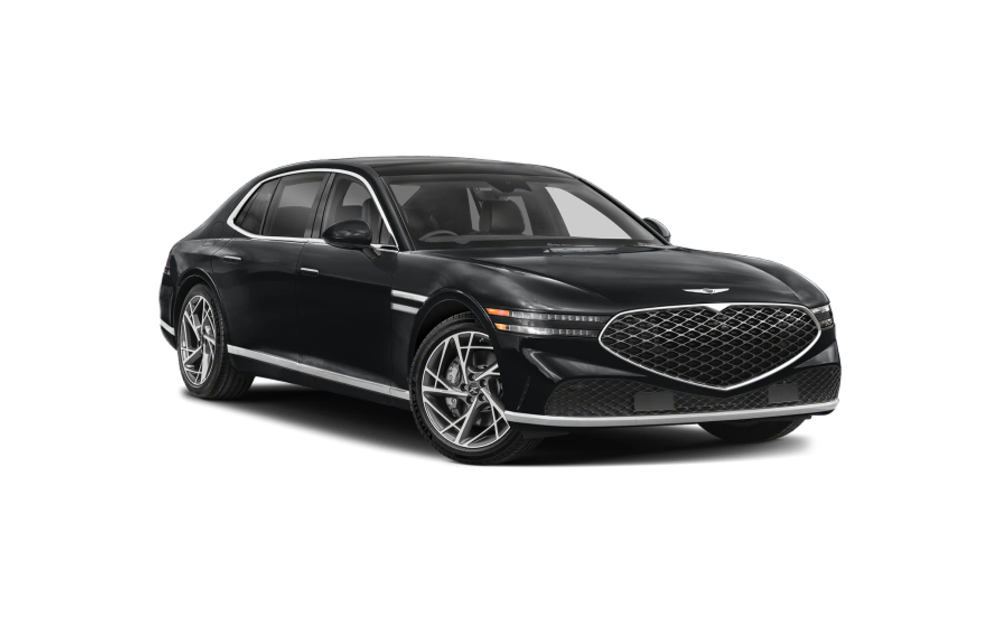

공항 ↔ 호텔 공항버스 · 전용차량 Airport ↔ Hotel Airport Bus · Chauffeur
김해공항·부산역(KTX) ↔ 해운대 공식호텔 구간, 공항버스 이용 정보와 전용차량 예약을 한 페이지에서 확인하세요. Gimhae Airport & Busan Station (KTX) ↔ official Haeundae hotels — airport bus information and chauffeur booking on one page.
공항버스 이용 안내Airport Bus Guide
김해국제공항·부산역(KTX)에서 BEXCO(센텀시티)까지 대중교통으로 이동하는 방법입니다.
How to reach BEXCO (Centum City) by public transit from Gimhae Airport or Busan Station (KTX).
김해국제공항 (PUS)Gimhae Int'l Airport (PUS)
- 국제선터미널Int'l Terminal
- 국내선터미널Domestic Terminal
- 남천동Namcheon-dong
- 더비치 푸르지오써밋Beach PRUGIO Summit
- 신세계 센텀시티Shinsegae Centum City
- BEXCO
- 요트경기장Yachting Center
- 파크하얏트 부산Park Hyatt Busan
- 한화리조트 해운대Hanwha Resort Haeundae
- 동백섬입구DongBaekseom Entrance
- 해운대해수욕장Haeundae Beach
- 해운대온천교차로Haeundae Hot Spring Int.
- 장산역(5번출구)Jangsan Stn. (Exit 5)
| 회차Trip | 1 | 2 | 3 | 4 | 5 | 6 | 7 |
|---|---|---|---|---|---|---|---|
| 출발Dep. | 07:10 | 07:50 | 08:30 | 09:10 | 15:30 | 16:10 | 16:50 |
- 국제선터미널Int'l Terminal
- 국내선터미널Domestic Terminal
- 남천동Namcheon-dong
- 더비치 푸르지오써밋Beach PRUGIO Summit
- 신세계 센텀시티Shinsegae Centum City
- BEXCO
- 요트경기장Yachting Center
- 파크하얏트 부산Park Hyatt Busan
- 한화리조트 해운대Hanwha Resort Haeundae
- 동백섬입구DongBaekseom Entrance
- 해운대해수욕장Haeundae Beach
- 해운대온천교차로Haeundae Hot Spring Int.
- 장산역(5번출구)Jangsan Stn. (Exit 5)
- 동백 백게이트(아난티코브)Dongbaek Back Gate (Ananti Cove)
- 반얀트리 부산Banyan Tree Busan
| 회차Trip | 1 | 2 | 3 | 4 | 5 | 6 | 7 | 8 | 9 | 10 | 11 | 12 | 13 | 14 | 15 | 16 |
|---|---|---|---|---|---|---|---|---|---|---|---|---|---|---|---|---|
| 출발Dep. | 10:10 | 10:50 | 11:30 | 12:19 | 12:30 | 13:10 | 14:10 | 15:30 | 16:10 | 17:10 | 17:30 | 18:00 | 18:50 | 19:30 | 20:30 | 21:40 |
위 시각은 모두 국제선터미널 기준 · 약 60분 간격. 국제선·국내선 청사 모두 1층 3번 승강장에서 탑승, 신용카드 결제만 가능(현금 불가). 운영사 Bus Inc. 051-583-7441.
All times from the Int'l Terminal · roughly every 60 min. Boards at Platform 3, 1F, both terminals — credit card only (no cash). Operator: Bus Inc. 051-583-7441.
부산역 (KTX)Busan Station (KTX)
1001번 04:30~22:00 · 1003번 04:20~22:20 · 각 약 10분 간격 운행, BEXCO 정류장에 정차합니다. 정확한 부산역 승강장 위치는 현장 안내판을 확인해 주세요.
Bus 1001 runs 04:30–22:00, Bus 1003 runs 04:20–22:20, each roughly every 10 min, stopping at BEXCO. Check on-site signage at Busan Station for the exact boarding bay.
이용 안내Information
- 반대 방향(BEXCO → 공항 / 역)도 동일한 노선·수단을 역방향으로 이용하시면 됩니다.
- 위 시간표·요금은 참고용이며 실제 배차·요금은 운수사 공지에 따라 변경될 수 있습니다. 공항리무진 상세 정보는 김해공항 공식 홈페이지, 그 외 노선은 여행 정보 · 입국 안내를 참고하세요.
- The reverse direction (BEXCO → Airport / Station) uses the same routes and modes.
- Schedules and fares above are for reference and may change per operator notice. See the official Gimhae Airport site for limousine details, or Travel Info · Arrival Guide for other routes.
전용차량 예약Book a Chauffeur
일정과 인원에 맞는 차량을 선택해 바로 예약하세요.
Select a vehicle that fits your schedule and group size, then book instantly.
차량 안내Vehicles
제공 차종 안내입니다.
Available vehicle types.



* 요금은 출발지·거리·일정에 따라 산정되며, 상단 예약 위젯에서 확인할 수 있습니다.
* Fares depend on origin, distance and schedule — check exact rates in the booking widget above.
이용 안내How It Works
예약Booking
- 사전 예약이 필수입니다 — 당일 현장 예약은 불가합니다.Advance booking is required — same-day walk-up bookings are not accepted.
- 픽업 시간 기준 최소 24시간 전에 예약해 주세요.Please book at least 24 hours before your pick-up time.
- 취소는 픽업 12시간 전까지 가능합니다. 늦은 취소는 취소 수수료가 발생할 수 있습니다.Cancellations are accepted up to 12 hours before pick-up. Late cancellations may incur a fee.
- 예약 확정 시 발송되는 e-바우처에 드라이버 연락처가 포함됩니다.The e-voucher sent upon booking confirmation includes the driver's contact details.
- 요청 시 김해공항 국제선 도착층에서 미트앤그리트 서비스를 제공합니다.Meet & greet service at Gimhae Airport International Arrivals is available upon request.